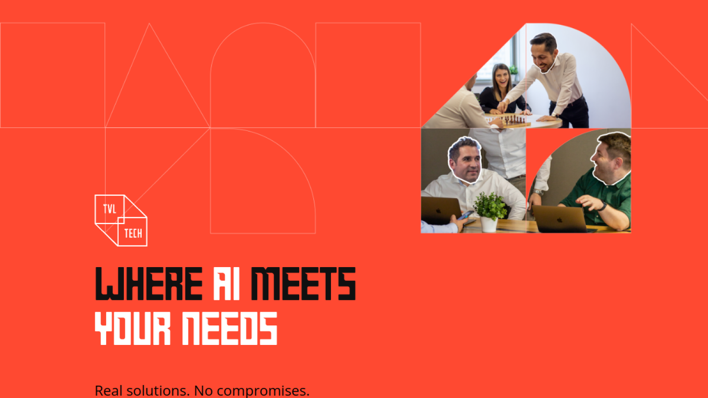
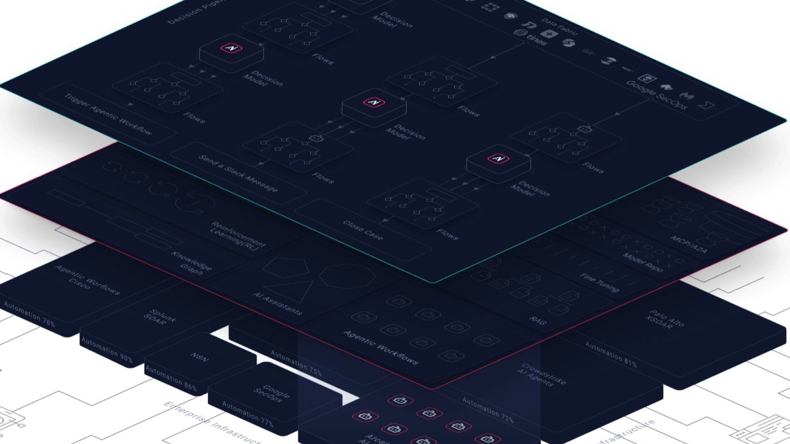
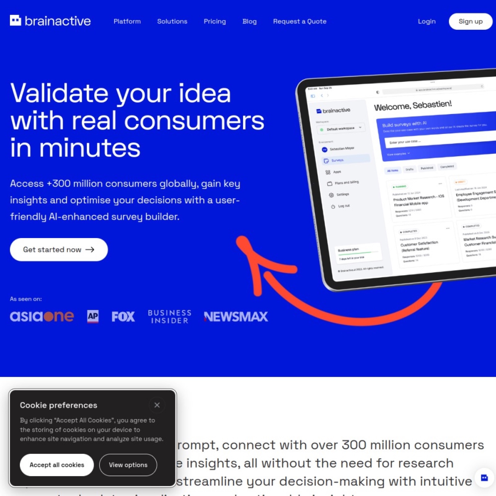
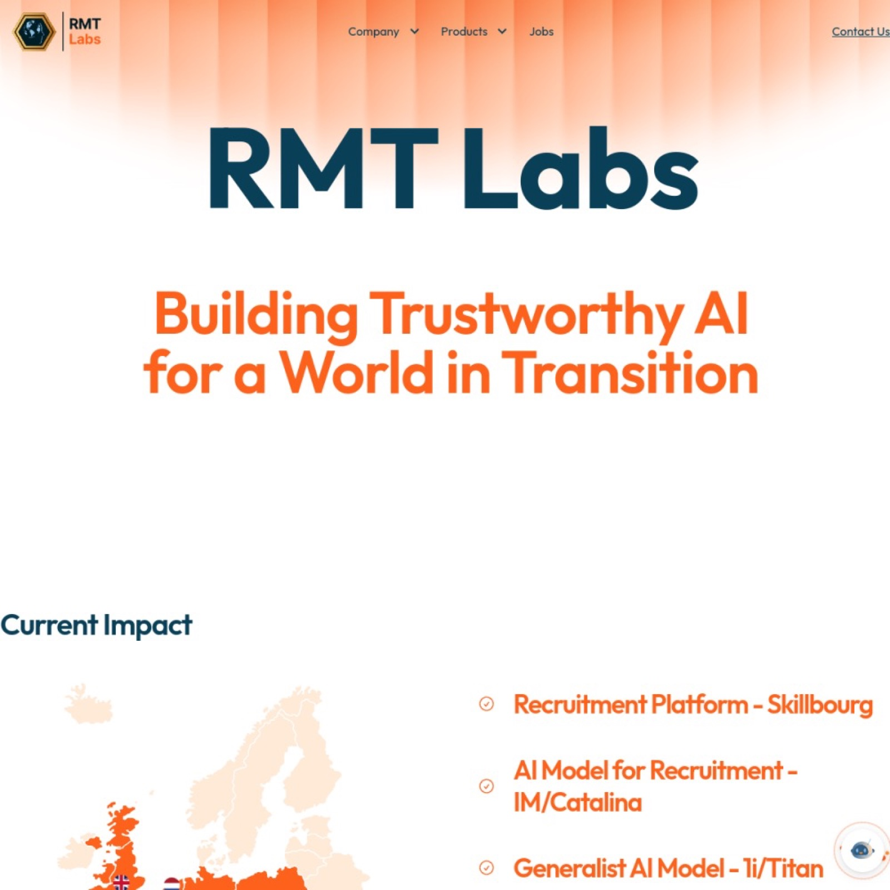
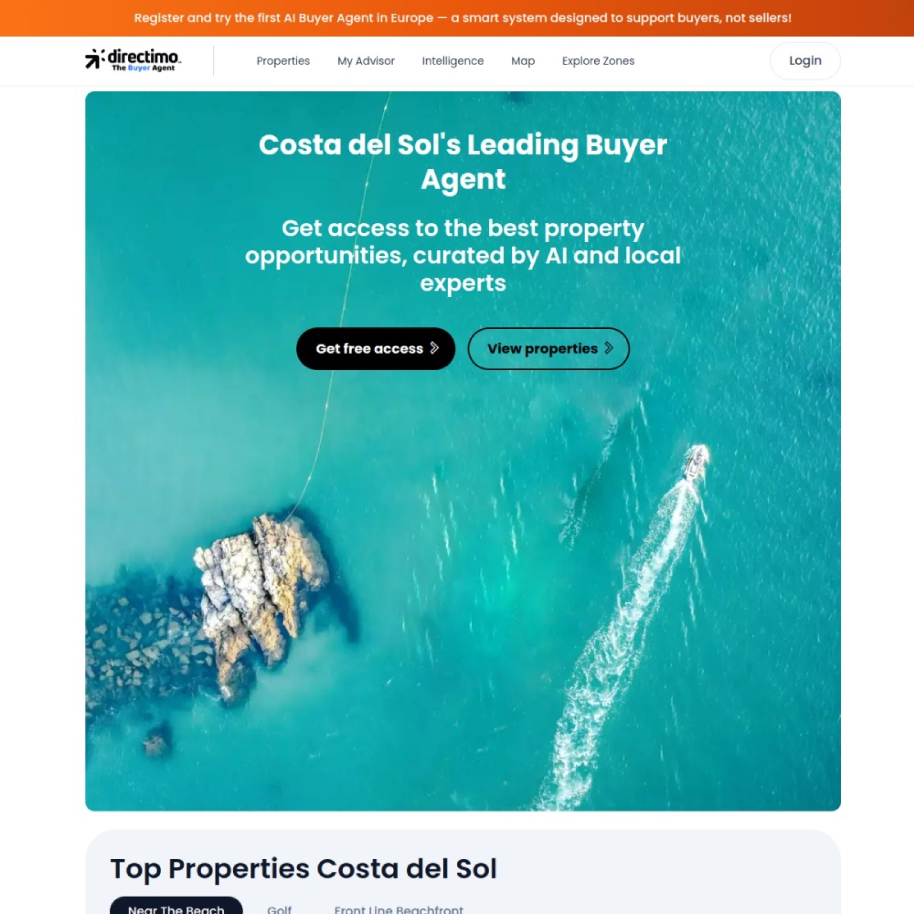
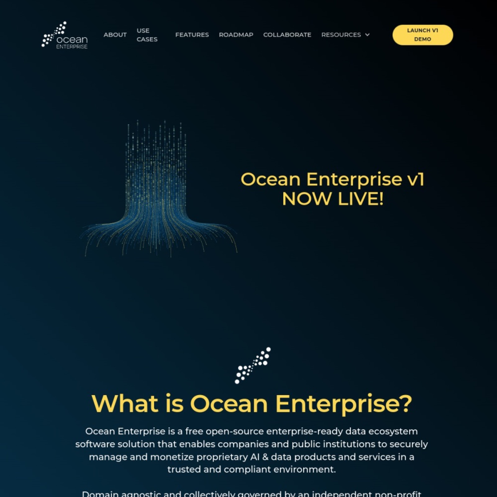
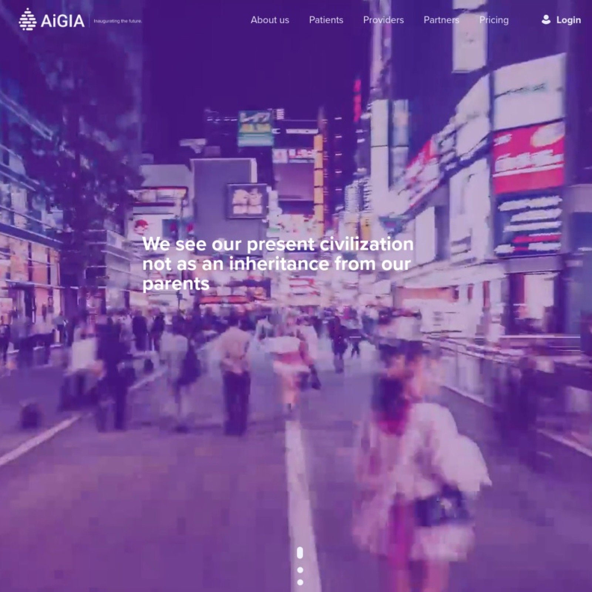
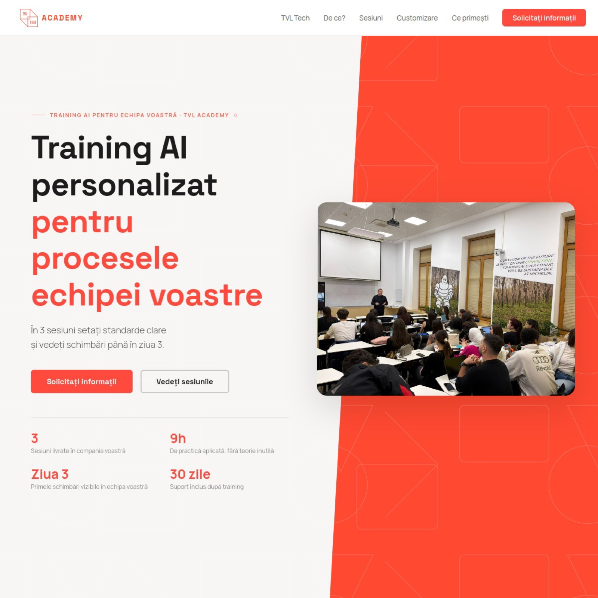
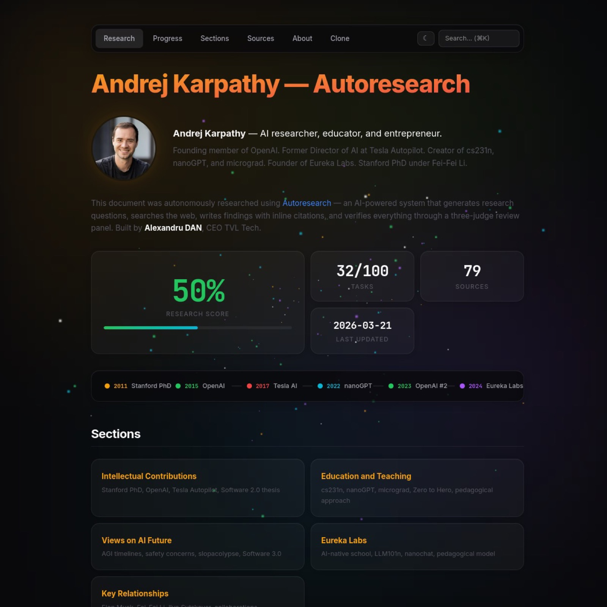

47+
Technical teams built and led
Applied AI Systems Architect | AI Professor | CEO at TVL Tech
I help organizations design, evaluate, and deploy AI systems that are useful in production, safe under pressure, and understandable to technical teams.
Trusted by teams in:
Professional memberships:
About
I am a technology evangelist and AI practitioner focused on transforming complex ideas into practical systems used by real teams. My approach combines architecture discipline with delivery speed.
I currently lead TVL Tech and teach AI topics for business and technical audiences, including Generative AI, prompt engineering, AI governance, and adoption strategy.
Impact
47+
Technical teams built and led
120
Developers coordinated at eMAG
$7M → $1B
Business scaling context over 5 years through product and delivery leadership
70+
Projects launched through TVL Tech delivery teams in multiple countries
Speaking and Workshops
Signature Topics
Formats
Typical audiences: engineering leads, product teams, solution architects, AI program managers, and compliance-aware technical stakeholders.
Technical Proof of Work
Case Study 01
Case Study 02
Case Study 03
Ethics by Design
01
Embed policy, risk review, and accountability directly into roadmap and release processes.
02
Define practical review gates where people remain in control for critical decisions.
03
Align systems with evolving AI regulations through design-time controls and documentation.
04
Balance innovation and responsibility so AI programs scale safely and create durable competitive advantage.
TVL Tech
Real solutions. No compromises.

TVL Tech builds software products with enterprise-grade delivery quality, combining modern architecture with practical execution across AI and custom platforms.
Journey
Sep 2024 - Present
Teaching Generative AI, LLMs, Prompt Engineering, AI Act, AI Agents, and AI Explainability in hybrid programs in Bucharest.
May 2019 - Present
Leading an AI innovation company delivering advanced systems for business transformation, compliance, and creative execution across enterprise, startup, and education projects.
Dec 2025 - Present
Building an AI recruitment platform to improve talent-role matching, hiring operations, and workforce intelligence.
Jan 2025 - Present
Contributing to global ICT and AI policy dialogue through the World Information Technology and Services Alliance.
Mar 2025 - Present
Supporting bilateral economic and technology collaboration between Luxembourg and Romania, with a focus on AI strategy and innovation.
Jan 2024 - Present
Contributing to an enterprise-ready, open-source, collectively governed Ocean Protocol ecosystem designed for compliant and stable business deployments.
Oct 2023 - Present
Advising on AI-driven neuroscience and market research systems that decode consumer behavior and support data-informed brand strategy.
Jul 2024 - Present
Designing AI architecture combining knowledge graphs, LLMs, and automation for advanced research and decision-support workflows.
Jan 2024 - Dec 2025
Led technical architecture and product direction during the platform's initial development phase in Luxembourg.
Nov 2023 - Jul 2024
Delivered AI-focused training programs within a cybersecurity education context for global and hybrid audiences.
Ventures

Cybersecurity decision intelligence platform focused on offense escalation and analyst support.
Open Arcanna AI
SaaS platform for AI-powered market research workflows and insight generation.
Open Brainactive AI
Recruitment optimization platform, including research on proprietary LLM support for hiring processes.
Open RMT Labs
Early startup project focused on practical product execution, architecture, and scalable delivery foundations.
Open Directimo
Enterprise-ready, open-source ecosystem focused on compliant and stable data and AI product development.
Open Ocean Enterprise
AI-powered research and decision support platform combining knowledge graphs, LLM workflows, and automation.
Open AIGIA HealthTVL Academy
Flagship Program

Inspired by the academy.tvl.tech model, this program is built around practical adoption, measurable outcomes, and a shared AI operating language across the company.
3
Applied sessions
9h
Focused team practice
Day 3
First visible outcomes
30
Days post-training support
Session 01
Teams build reusable prompt libraries and review standards for consistent outputs.
Deliverable: team prompt playbook with reusable templates.
Session 02
Participants deploy role-specific assistants powered by company language and process constraints.
Deliverable: role-based assistants configured for real workflows.
Session 03
Leaders prioritize 3-5 high-impact automation pilots with owners, metrics, and next actions.
Deliverable: prioritized pilot roadmap with owners and KPIs.
Featured Project
Live Platform

A focused environment for automated research workflows that helps teams move from questions to structured findings faster, with clear human oversight.
AutoResearch extends your practical AI vision by making continuous learning and strategic analysis faster, repeatable, and easier to operationalize across teams.
Featured Project
Live Platform
Ocean Enterprise is a free, open-source, enterprise-ready ecosystem focused on compliant, stable, and production-friendly infrastructure for data and AI products.
This project strengthens your portfolio in enterprise AI infrastructure, showing your involvement in open, collaborative, and compliance-oriented innovation.
Signature Talks

Featured keynote on AI implementation, GenAI, and practical systems strategy.
View announcementSession on business model innovation and applied AI decisions for future leaders.
Open field note
Field notes on maturity, regression suites, and rigorous testing in conversational AI.
Read takeawaysRepresented Ocean Enterprise Collective with a focus on trust, sovereignty, and practical adoption.
Explore Ocean EnterprisePress Releases
ICMarkTech
Official event release confirming keynote participation and AI strategy topics.
Read press release
Romania and Luxembourg diplomatic relations event
Institutional publication connected to high-level Romania-Luxembourg cooperation context.
Open publication
Ziarul Financiar
Broadcast interview on practical AI execution and near-term organizational impact.
Watch interview
Mediafax
Editorial feature highlighting how AI copilots will reshape everyday work.
Read feature
Adevărul
Public commentary on AI capability, risk, and responsible human adoption.
Read interview
Republica
Collection of published analyses focused on business transformation through AI.
Open profileMinistry of Economy Luxembourg
Official institutional communication on innovation and AI ecosystem engagement.
View announcement
Ziarul Financiar
Additional ZF coverage on long-term AI adoption scenarios and business implications.
Read article
Republica
Editorial analysis on market shifts, model competition, and strategic implications.
Read article
Republica
Discussion on AI-driven misinformation patterns and election-period communication risks.
Read article
Republica
Perspective on automation in hiring, fairness concerns, and practical HR impact.
Read article
Republica
Interpretation of regulatory boundaries and unacceptable AI practices under EU law.
Read article
Republica
Commentary on data sourcing, intellectual property, and model training practices.
Read article
Republica
Public analysis of infrastructure fragility, resilience, and operational continuity.
Read article
Republica
Article on AI governance, legal obligations, and societal risk management.
Read articlePrinciples
AI will not replace your job, but someone who knows AI might.
The biggest risk is not conscious machines, but unprepared organizations.
Companies that delay AI capability building survive only by luck.
Workshop Outcomes
Concrete rubric for model behavior, reliability, safety, and rollout confidence.
Prompt patterns and guardrails that teams can apply immediately in production work.
Practical architecture map for orchestration, memory, retrieval, and observability.
Simple scoring lens to prioritize AI pilots by impact, feasibility, and risk.
Operational controls that fit delivery reality and align with EU compliance expectations.
Current Themes
How teams move from prototypes to stable systems with monitoring and accountability.
Insights from public events, workshops, and summits where testing discipline is becoming a core differentiator.
Build less demo AI, ship more production AI: evaluation first, architecture second, governance always on.
Media Kit
Short Bio (80 words)
Alexandru Dan is an Applied AI Systems Architect, AI Professor, and CEO at TVL Tech. He helps organizations build, evaluate, and deploy AI systems in production, with a focus on reliability, governance, and measurable impact. He has led delivery across enterprise and startup environments, coordinated large technical teams, and teaches practical AI workshops on LLM architecture, agentic workflows, testing, and AI adoption strategy.
Long Bio (180 words)
Alexandru Dan is an AI practitioner and technology leader focused on turning AI ambition into production reality. As CEO at TVL Tech and Visiting Associate AI Professor at the Bucharest University of Economic Studies, he combines architecture depth with practical delivery experience. His work spans LLM applications, conversational AI quality engineering, agentic workflows, data-space aligned architectures, and governance-by-design for real organizations. Across his career, he has coordinated large engineering teams, delivered complex platforms in regulated and high-scale environments, and supported enterprises and startups in moving from pilot experiments to durable AI systems. He is an active public speaker on AI implementation strategy, testing rigor, and responsible adoption under operational pressure. In workshops, he is known for concrete frameworks and reusable outputs teams can apply immediately: evaluation checklists, reference architectures, prompt patterns, pilot prioritization models, and practical governance controls. His sessions are designed for technical and mixed audiences that want actionable guidance, not abstract AI theory.
Organizer Assets
FAQ
Alexandru DAN is an AI Ethics Ambassador, CEO at TVL Tech, and technology leader focused on practical and responsible AI strategy, governance, and execution.
Services include AI strategy advisory, governance and compliance design, executive AI training, keynote speaking, and delivery support for AI-enabled digital products.
TVL Academy includes applied team programs on prompt engineering, custom AI assistants, and AI design sprint methodologies, with concrete outputs from each session.
Yes. Engagements are designed around responsible AI practices, governance controls, human oversight, and practical compliance alignment for European organizations.
The fastest way is direct email at alex@tvl.tech with your objective, timeline, and team context.
Contact
For strategic advisory, keynote speaking, leadership workshops, or product execution support, email me directly.
alex@tvl.tech